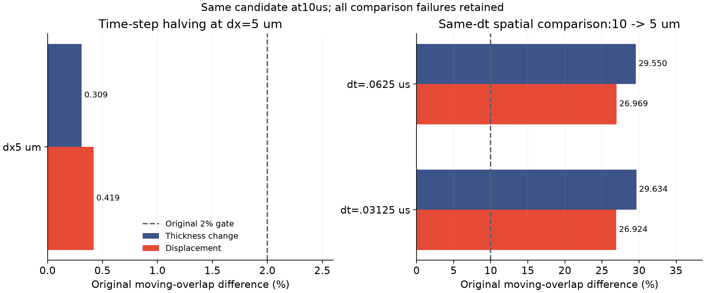
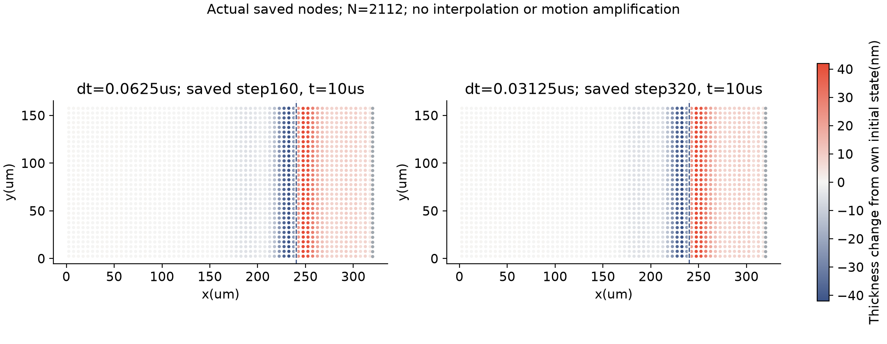

两组都算完了。
时间一致，空间仍未过关。
本轮解决的是“能否把更细的粒子计算完整跑完，并检查结果靠不靠谱”。结论是：同一粒子分辨率下，时间步减半几乎不改变结果；粒子从10微米加密到5微米，结果仍有明显差异。
2112粒子，两组分别160和320步，均到10微秒；合计计算6.22小时。
保存状态的守恒与机械功分别独立核对；这不等于连续物理通量已验证。
原标准为10%；膜厚变化和位移两项仍未同时达标。
本轮具体做了什么
1. 保留几何里的短边
候选实现保留了原先因长度阈值被丢弃的正长度短边，检查它能否改善运动粒子的几何稳定性。原来的几何验收标准没有放宽。
2. 用同一程序重建对照
20、10、5微米参考均使用同一候选程序；5微米采用两个时间步。旧实现第78步失败的证据保留，没有与新结果混成一组。
3. 算完后独立验收
核对液量、表面活性剂和机械功，再比较时间步与粒子间距。通过与未通过都报告，不靠改材料或改阈值凑结果。
这是局部几何处理的候选改动和数值证据；尚不能作为完整新方法或物理预测创新已经成立的证明。默认实现未替换。
为什么“算完了”还不等于“可信预测”
时间检查问：把每一步变短，答案是否基本不变？空间检查问：把粒子排得更密，答案是否基本不变？两项都要过关。

| 比较 · 均在10 μs | 膜厚变化差异 | 位移差异 | 结果 / 原标准 |
|---|---|---|---|
| 5 μm：时间步减半 | 0.309% | 0.419% | 通过 · 2% |
| 10→5 μm：dt = 0.0625 μs | 29.550% | 26.969% | 未通过 · 10% |
| 10→5 μm：dt = 0.03125 μs | 29.634% | 26.924% | 未通过 · 10% |
使用原来的运动区域重叠范数；百分比是两个离散解之间的差异，不是相对实验真值的误差。此前20→10微米的空间失败仍保留；本次差异变小，尚不足以估计收敛阶。
真实粒子里发生了什么
每个圆点来自一次真实保存的粒子状态；两幅图都在10微秒。蓝色表示相对各自初态变薄，红色表示变厚，共用同一色标。

两图相似支持时间配对的观察；10→5微米是否收敛，应看上面的原范数检验，不能仅凭这两张5微米图判断。这里是局部薄膜数值状态，不是完整泡泡或实验照片。
现在能说什么，还不能说什么
已有证据
同一候选5微米配对完整完成，保存状态的独立核对通过，时间差异通过原2%标准。更细粒子计算的稳定性获得了新证据。
仍未解决
空间差异未通过原10%标准。50／200微秒、连续物理通量与牵引力、独立预测的交换系数和新薄膜元厚度比、整体条纹及主实验／保留工况验证仍未完成。
此前20／10微米参考 · 旧实现失败报告 · 与原始C1规划对照 · 原规划
完整证据与复现
133份原生输出、关闭日志、审计和冻结源码，共70.518 MB。已从19个小于5 MB的ZIP实际恢复，逐文件字节和SHA256核对一致。